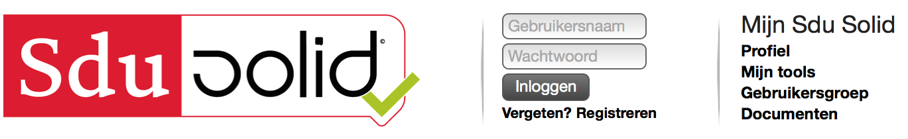
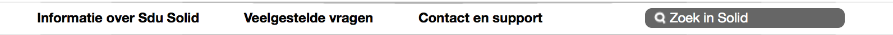

Vaste elementen
Header
 Op de header is een hoop mogelijk:
- Logo-sectie
- Inlog-sectie
- Inloggen
- Wachtwoord vergeten
- Registreren
- Mijn SDU Solid
- Mijn profiel
- Mijn tools
- Gebruikersgroep
Navigatiebalk

De navigatiebalk bestaat uit 4 onderdelen:
- Informatie over SDU Solid
- Veelgestelde vragen
- Contact en support
- Zoeken
Tweede navigatiebalk

Deze navigatiebalk geeft de mogelijkheid om te navigeren tussen de verschillende thema’s.
Footer

Logo en copyright.